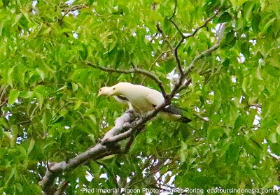

Minahasa is a region in the Province of North Sulawesi that is a highly recommended destination for visitors who are nature lovers. Minahasa has got forest, farmland and rice field areas that are the habitat of hundreds of species of birds.
Some birds from Sulawesi islandRed-backed Thrush
Places like Sonder's Forest, Lalek Forest, Matenem Agricultural land, Mount Mahawu, Pine Forest of Lahendong, and Lake Linow are the habitat of colourful birds such as Chestnut Munia, Scaly-breasted Munia, Black-faced Munia, Brown-throated Sunbird, Sahul Sunbird, Crimson Sunbird, Black-crowned White-eye, Mountain (Warbling) White-eye, Grey-cheeked Green Pigeon, Sulawesi Cuckoo Dove, Black-naped Fruit Dove, White-faced Cuckoo Dove, Zebra Dove, Pale Blue Monarch, Black-naped Oriole, Sulawesi Pygmy Woodpecker, Gray-sided Flowerpecker, Yellow-sided Flowerpecker, Brush Cuckoo, Sooty-headed Bulbul, and a lot more.
Walking Tour in Agricultural Land
Most Minahasan people work as farmers. They grow vegetables, rice in paddy fields, coconut, vanilla, and clove in their farmlands. They also raise run fish, pig and poultry farming. During this tour, participants will be able to explore them while enjoying birdwatching, butterflywatching, and sightseeing.
Grey-cheeked Green Pigeon
More birds could be watched during the walking tour in the agricultural land of Minahasa especially in Sonder town. They include Collared Kingfisher, White-breasted Woodswallow, White-browed Crake, Cinnamon Bittern, Barred Rail, Eastern Yellow Wagtail, Purple Heron, Cattle Egret, Little Egret.
Flight Route to Manado City
Visitors need to fly to Manado city in order to travel to Minahasa highland. Daily flights between Manado city and major cities in Indonesia are available every day. They are served by TransNusa, Lion Air, Batik Air, Sriwijaya Air and etc.
Device for Birding and Wildlife Watching
To enhance birding experience, I as a birdwatching guide, usually bring binoculars, spotting scope (optional) and camera. A laser pointer, portable loudspeaker and flashlight will also be needed for more birding activity. Field guide book Birds of Indonesia: Greater Sundas and Wallacea by James Eaton et al., or Merlin app that will allow birdwatchers to identity and record birds that they see.
To book your birdwatching trip in Minahasa, please, contact me (Charles Roring) by email to: peace4wp@gmail.com or by whatsapp to: +6281332245180.
BURUNG KUMKUM
Kumkum adalah nama yang dipakai oleh masyarakat di Tanah Papua untuk burung Pinon Imperial Pigeon (Ducula pinon) dan sejenisnya. Burung ini memiliki fungsi yang penting sekali dalam ekosistem hutan hujan tropis sebagai penyebar biji-bijian. Masih sebangsa dengan burung merpati, burung kumkum sering dijadikan simbol untuk pengungkapan cinta sejati, dan kesetiaan.
Sebenarnya burung-burung yang sejenis dengan kumkum tetapi dengan ukuran tubuh dan warna yang berbeda di seluruh Tanah Papua dan pulau-pulau satelit di sekitarnya ada banyak. Keluarga pigeons dan doves ada sekitar 52 spesies di daerah ini. Beberapa di antaranya (dalam Bahasa Inggris) adalah sebagai berikut:
Pinon Imperial Pigeon - warnanya abu-abu dan hidup di hutan dataran dan pegunungan rendah di Tanah Papua. Makanannya adalah buah-buahan yang ada di hutan. Masyarakat suka berburu burung kumkum karena dagingnya yang cukup lezat. Burung Kumkum kadang terlihat berpasangan di dahan-dahan pohon. Namun demikian burung ini sering berkumpul dalam kelompok besar ketika sedang makan di sebuah pohon yang berbuah lebat. Ciri khas utamanya adalah adanya gari putih di ekor serta mata yang berwarna merah.
Burung Pergam Rempah/ Spice Imperial Pigeon (Ducula myristicivora)
Spice Imperial Pigeon - sekilas bentuk dan warna burung ini mirip dengan Pinon Imperial Pigeon. Tetapi burung ini memiliki knob di atas paruhnya. Burung Spice Imperial Pigeon atau Pergam Rempah mudah dilihat di pulau-pulau kecil yang ada di Kepulauan Raja Ampat.
Burung Kumkum Putih
Pied Imperial Pigeon - saya sering melihat burung ini ketika bepergian ketika berada di Pulau Waigeo di Raja Ampat. Mereka sering makan buah di pepohonan di pinggir pantai dalam jumlah besar. Burung kumkum warnanya putih dengan tepian sayap berwarna hitam. Lokasi yang gampang dicapai untuk melihat burung ini adalah di Pantai Warduwer di sebelah selatan Waigeo.
Mountain Fruit Dove - saya memotret burung di atas ketika berada di Pegunungan Arfak. Thane K. Pratt dan Beehler et al dalam buku Birds of New Guinea atas pertimbangan ilmiah tertentu memisahkan spesies ini dengan White-bibbed Fruit Dove.
Brown Cuckoo Dove - Kalau kita berjalan lebih jauh ke dalam hutan, burung ini akan kita jumpai. Burung ini bisa dijumpai di Kawasan Hutan Dataran hingga Pegunungan Rendah bahkan sampai di kawasan transisi ke hutan Pegunungan Tinggi terutama saat musim buah. Dalam buku Birds of New Guinea: including Bismark Archipelago and Bougainville karya Phil Gregory, spesies burung ini telah dipecah menjadi beberapa spesies sesuai dengan lokasi habitatnya di pulau-pulau yang berbeda. Sebagian orang mengatakan pemisahan (split) species burung tersebut agak dipaksakan.
Great Cuckoo Dove (Reinwardtoena reinwardti) hidup di sebagian besar wilayah hutan Papua termasuk pulau-pulau di sekitarnya. Di dahan pohon yang sedang berbuah di pinggir sungai dan bahkan di pinggir laut, saya kerap melihatnya.
Cinnamon Ground Dove (Gallicolumba rufigula) - Burung ini menurut IUCN masuk dalam status Least Concern, artinya populasinya cukup banyak. Namun demikian, burung ini tergolong sulit untuk dilihat dan dipotret oleh para wisatawan pengamat burung. Warna bulu yang coklat mirip tanah di punggung dan kepala menjadikannya agak sulit untuk dipotret. Foto di atas saya buat ketika memandu seorang wisatawan Amerika Serikat di hutan Gunung Soyti di Pegunungan Arfak.
Wompoo Fruit Dove - Burung ini termasuk yang paling indah warnanya dalam keluarga pigeon dan dove. Foto di atas saya ambil saat berada di hutan Tambrauw. Burung ini bersarang di dahan pohon yang cukup rendah dari tanah namun masih terlindung oleh dedaunan dan ranting-ranting. Saya berhasil mendapat celah untuk memotretnya dengan baik. Sarang yang relatif kecil dibandingkan tubuhnya nampak rentan terhadap serangan predator. Demikian pula, jika terjadi angin kencang, dahan bisa bergoyang kuat. Induk burung tetap setia mengerami telurnya.
Teropong pengamatan burung yang saya rekomendasikan:
Salah satu hal yang membuat saya kagum dengan burung kumkum adalah kemampuan mereka untuk terbang cepat sekali menembus celah-celah dahan dan ranting pohon tanpa menambraknya.
Untuk sementara ini dulu ulasan saya tentang burung-burung dalam keluarga kumkum. Nanti saya tambah lagi di lain waktu.